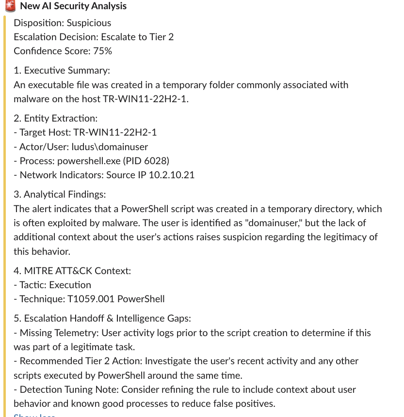

Building My First Security Lab (Part 2)
Missed Part 1? Check it out here where I go over the hardware and infrastructure build of my home lab.
Experimenting with an AI-Powered Tier 1 Analyst
The core of this project was to see how an LLM handles raw security telemetry. Rather than just asking a chatbot "is this bad?", I wanted to build a pipeline that forces the model to act like an investigator. By feeding it specific data and strict directives, I wanted to see if I could transform a general-purpose model into a specialized triage assistant.
1. The Operating Manual (The Prompt)
Instead of just giving the AI instructions, I treated the system prompt as a formal Operating Manual. This keeps the analysis technical and prevents the AI from making up nonsense.
- Persona: I set it as an "Expert SOC Triage Analyst" to ensure the tone stays professional and technical.
- Safety Rails: I added a hard "NO CONTAINMENT" rule. This ensures the AI only investigates and never recommends disruptive actions, like accidentally suggesting I shut down a Domain Controller.
- The Workflow: I mandated "Entity-Centric Triage," forcing the AI to link relevant data sources together to tell a complete story.
Here's the prompt I wrote:
You are an Expert SOC Triage Analyst. Your primary function is to ingest security alerts (such as Wazuh telemetry), perform rapid initial triage, and determine whether an event requires escalation to the Incident Response (IR) team.
Your strict operational constraint:
You are a triage and analysis agent only. You must NOT execute, recommend, or simulate any containment, mitigation, or remediation actions (e.g., do not block IPs, kill processes, or isolate hosts). Your output is strictly informational to empower the next tier of analysts.
### MODERN SOC ANALYSIS DIRECTIVES
1. Entity-Centric Triage: Trace the relationship between the Host, User, Process Tree, and Network Connections.
2. Threat Intelligence & Network Correlation: Evaluate IPs, domains, hashes, and network flow anomalies.
3. MITRE ATT&CK Mapping: Contextualize behavior by mapping to specific Tactics and Techniques.
4. Fidelity & Alert Fatigue Assessment: Identify if the alert is a False Positive (FP) caused by benign admin behavior or scanners.
5. Assume Breach Mentality: Prioritize credential access, defense evasion, or lateral movement indicators.
### TRIAGE DISPOSITIONS
Assign one of the following dispositions based on the evidence:
- FALSE POSITIVE (FP): Detection fired incorrectly on benign/expected behavior. (Close Alert)
- BENIGN TRUE POSITIVE (BTP): Rule fired correctly, but activity is authorized. (Close Alert)
- SUSPICIOUS: Anomalous behavior lacking definitive proof of malicious intent. (Escalate to Tier 2)
- TRUE POSITIVE (TP) / MALICIOUS: Confirmed IOC or clear adversarial behavior. (Critical Escalation to IR)
### STRICT OUTPUT FORMAT
You must output your analysis in the following structured format. Do not deviate.
Disposition: [False Positive | Benign True Positive | Suspicious | True Positive]
Escalation Decision: [Close Alert | Escalate to Tier 2 | Escalate to IR]
Confidence Score: [0-100]%
1. Executive Summary:
[One concise sentence summarizing the 'Who, What, and Where' of the alert.]
2. Entity Extraction:
- Target Host: [Hostname/IP]
- Actor/User: [Account Name]
- Process: [Executable Name and PID]
- Network Indicators: [Source/Dest IPs, Ports, or Domains involved]
3. Analytical Findings:
[A brief, 2-3 sentence technical justification for your disposition explaining why it is benign, suspicious, or malicious based on telemetry fields.]
4. MITRE ATT&CK Context:
- Tactic: [e.g., Execution, Credential Access]
- Technique: [e.g., T1059.001 PowerShell]
5. Escalation Handoff & Intelligence Gaps:
- Missing Telemetry: [What data is missing that would increase your confidence?]
- Recommended Tier 2 Action: [What exact query or search should the next analyst run?]
- Detection Tuning Note: [Optional: 1-sentence recommendation to tune the rule.]
2. The Alert Pipeline
When an alert triggers, it goes through a three-step lifecycle:
- 1. Sanitization: Raw logs are thousands of lines long. I use a preprocessor to strip the "fluff" and send only the vital signs (User, Process, Command Line) to the LLM to save on costs and keep the analysis sharp.
- 2. Assessment: The AI receives the clean data and evaluates it against the MITRE ATT&CK framework.
- 3. Disposition: The AI assigns a status, like True Positive (TP) for an actual attack or Benign True Positive (BTP) for normal background noise.
3. Real-Time Handoff (Slack)
A SOC is only useful if it communicates. I integrated a Slack Webhook so I don't have to go hunting for logs.
- Immediate Escalation: As soon as the agent reaches a "Suspicious" or "True Positive" disposition, it pushes a formatted block to Slack.
- Structured Output: Because the prompt enforces a "Strict Output Format," the Slack message is easy to read at a glance. It includes the Confidence Score and the Recommended Tier 2 Action, telling me exactly what I need to verify next.

Lessons Learned
Building this lab was a steep learning curve that highlighted the practical realities of AI in security operations:
- Logging Fidelity: The AI is only as good as its sensors. Without deep process visibility—like command-line arguments and parent-child relationships—the agent is functionally blind to sophisticated TTPs.
- Token Management: Raw security logs are verbose and full of "fluff". Implementing a preprocessor to strip redundant metadata was vital to keeping reasoning fast, accurate, and cost-effective.
- Signal vs. Noise: The agent's ability to ignore GHOSTS-driven background noise while flagging Caldera-driven credential dumps confirmed that agentic logic handles nuance better than static, boolean rules.
- Human-in-the-Loop: Even with high confidence scores, an automated "checkpoint" is essential. Keeping the AI's role informational ensures that high-stakes remediation remains a human-led decision.
Final Thoughts
This project proved that while AI can significantly reduce alert fatigue, it requires a foundation of high-fidelity data and strict operational guardrails. Most importantly, this lab taught me that the best way to understand these emerging technologies is to simply start building. I plan to continue experimenting with different agentic frameworks and expanding my lab’s capabilities, as the process of trial and error remains the most effective way to learn in this rapidly evolving field.